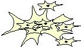
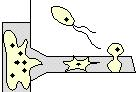
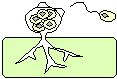
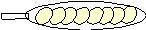
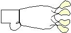
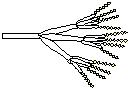
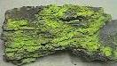
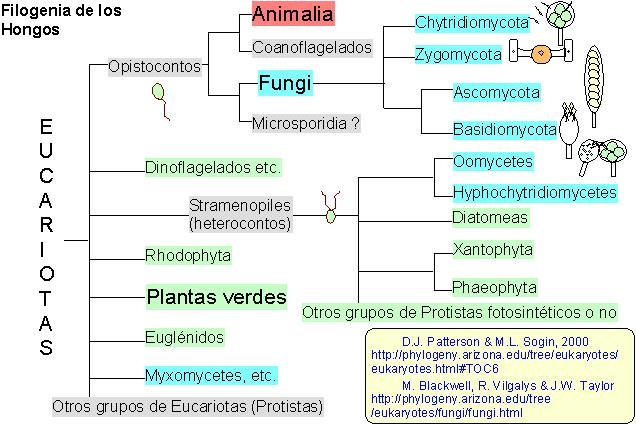

(y levuriformes)
(heterocontos, p.c. celulósica)
También llamados falsos hongos

(opistocontos o aflagelados, p.c. quitinosa)






| Hongos ameboides | Acrasiomicotas (pseudoplasmodiales) |  |
|
| Mixomicotas (plasmodiales) | |
||
| Plasmodioforomicotas (endoparásitos) |  |
||
| Hongos filamentosos (y levuriformes) |
Oomicotas (heterocontos, p.c. celulósica) También llamados falsos hongos |
Oomicetos | |
| Labirintulomicetos | |||
| Hifoquitridiomicetos | |||
| Eumicotas (opistocontos o aflagelados, p.c. quitinosa) |
Quitridiomicetos (opistocontos) |  |
|
| Zigomicetos (micelio sifonal) | |
||
| Ascomicetos (micelio septado; asca) |  |
||
| Basiodiomicetos (micelio septado; basidio |  |
||
| Deuteromicetos (hongos imperfectos) |  |
||
| Líquenes (simbiontes) |  |
||
